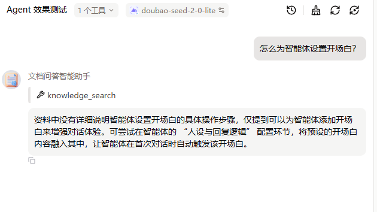
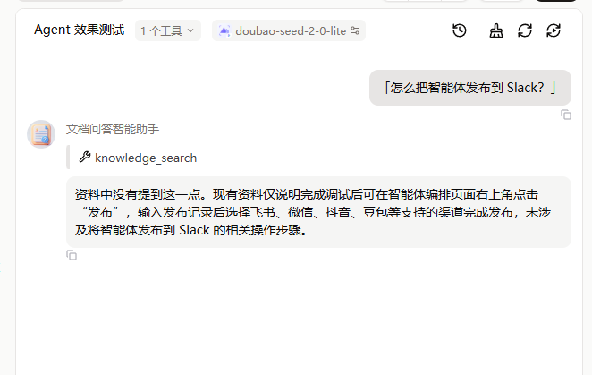

从「能跑通」到「知道它什么时候会失败」
扣子（Coze）平台 · 真实官方文档语料 · 四轮对照实验这不是一个"我搭了个知识库问答"的 Demo，而是一份"我把它的失败测出来了"的评测报告。 所有结论均基于实测，含两次被证伪的假设与一次语料污染复盘。
| 指标 | 结果 |
|---|---|
| 事实题正确率 | 6 / 7（86%） |
| 查询改写后事实题 | 7 / 7（100%） |
| 陷阱题拒答率 | 3 / 3（100%），全程零编造 |
| 半真半假陷阱题 | ✅ 正确识别并拒答（文档讲了一半的题） |
| 提示词迭代 | v1 → v4，共 4 轮，每轮均有实测数据支撑 |
语料：4 篇扣子官方文档原文（约 3500 字），非自造测试数据。 注：事实题 6/7 中唯一失败的是第 4 题"四种能力"（多跳聚合型），未在干净语料下重测，故保留原始值。
大多数人做完 RAG 的终点是"能回答问题了"。这个项目的起点是：
它在什么情况下会答错？答错了之后我怎么知道是哪里错了？
| 实验类型 | 目的 | 结论 |
|---|---|---|
| 单变量对照实验 | 定位检索失败根因 | 锁定「词汇不匹配」 |
| 消融实验 | 拆解防幻觉机制 | 三层冗余，假设两次被证伪 |
| 双向验证 | 测改进是否牺牲安全性 | 有用性↑，安全性未退化 |
| 重复运行 | 量化输出稳定性 | 一致率 0，确立重复取样纪律 |
同一个知识点，只改提问措辞，其余条件全部相同。首次实测：口语版"可以发布给别人用吗"答不出，原文词"自定义插件"答对。
重跑（语料未变）后口语版也答对了，唯一真实变量是提示词 v1→v3。修正结论： 失败关键不在用户措辞，而在提示词是否允许模型复用已召回的片段 （v1 把"未完全匹配"等同于"没有信息"→错误拒答；v3 允许基于部分片段作答→成功）。
| 层级 | 机制 | 结论 |
|---|---|---|
| 平台层检索兜底 | 检索为空→系统返回"未查询到" | ✅ 主力防线，条件触发 |
| 提示词·角色设定 | "你是文档问答助手" | ✅ 生效 |
| 提示词·显式防幻觉约束 | "绝对不要编造" | ⚠️ 完全无召回场景下冗余 |
v1 下部分召回的问题只得到一句干巴巴的"资料中没有提到这一点"。改成"说明缺什么 + 给出已有部分"（v2）后：
资料中仅提到可以为智能体添加开场白来增强对话体验，未说明具体设置步骤。可在编排页面左侧"人设与回复逻辑"面板中…可尝试在此处定义开场白。
双向验证：有用性显著提升，陷阱题仍 3/3 零编造。
| 口径 | v2 | v3 |
|---|---|---|
| 明确标注率 | 33% | 50% |
| 给出推断比例 | 67% | 75% |
根因是两层随机性叠加：①模型要不要给推断 ②给了之后标不标注。由此提出改用结构化输出（v4）——用格式约束替代语义约束。
| 表现 | 用户后果 | |
|---|---|---|
| 编造 | 把不存在的内容当事实："在设置→高级选项中配置开场白" | 照做，然后失败 |
| 推断 | 基于真实片段外推 + 标注不确定："可尝试在人设与回复逻辑面板中定义" | 知道要自己验证 |
上面的优质回答逐句核对后 4/5 分句都是原文照搬，只有最后一句是标注过的推断——第一眼很容易被误判成幻觉。

半真半假陷阱题（文档讲了"发布"、没讲 Slack）被正确拒答，且主动列出真实支持的渠道。可见 knowledge_search 工具真实调用：

同一道题、同一份资料、同一个提示词，每题开新会话跑 3 次，三次回答内容一致率 0/3。
任何基于单次运行的评测结论都不可靠。一次通过不代表系统稳，一次失败也不代表系统有问题。必须重复取分布。
| 版本 | 改动 | 实测结果 |
|---|---|---|
| v1 基线 | — | 事实题 6/7，陷阱 3/3，部分召回场景回答过干 |
| v2 拒答粒度优化 | 新增"说明缺什么 + 给出已有部分" | 有用性↑，安全性不变；标注靠运气 |
| v3 强制标注 | 新增"推断必须标注" | 标注率 33%→50%，未达标 |
| v4 结构化输出 | 改分两段输出 | ⚠️ 未实测，方案待验证 |
data/Coze官方文档资料集.txt 为知识库prompts/ 下任一版本